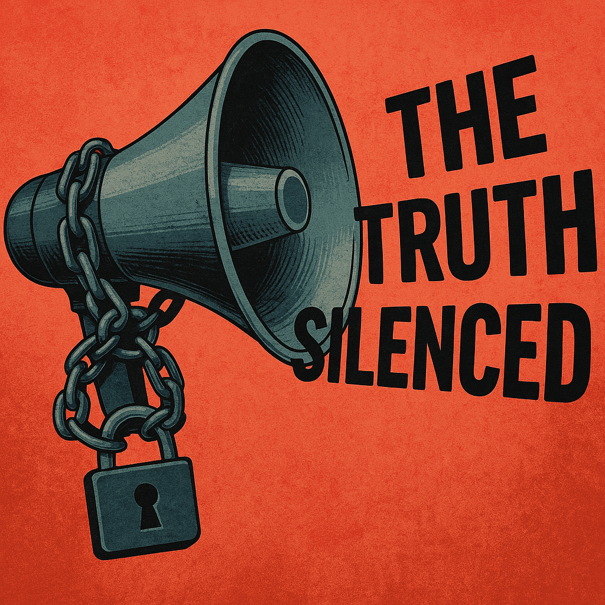

Publicado em 2025-04-13 18:55:39
Vivemos numa era paradoxal: temos acesso ilimitado à informação, mas nunca estivemos tão desinformados. A verdade tornou-se uma ameaça aos interesses instalados. Quem a busca é rotulado de radical, teórico da conspiração ou ingénuo. A mentira, pelo contrário, assumiu o centro do palco — sofisticada, repetida, legitimada.
Os factos são distorcidos à medida da conveniência política e económica. Os media, em vez de serem o quarto poder, tornaram-se a extensão dos gabinetes de comunicação dos partidos, das empresas e dos lobbies. A narrativa não tem compromisso com a realidade — apenas com a sua utilidade estratégica. O jornalismo independente é minoria, assediado, pobre e sem voz nas grandes plataformas.
As democracias estão reféns. Reféns de uma economia que não respeita o bem comum. Reféns de sistemas eleitorais que reciclam elites. Reféns de agências de rating, mercados financeiros e algoritmos de vigilância. O lema é antigo: dividir para reinar — e nunca foi tão eficaz.
A polarização é alimentada como um produto de consumo. Direita e esquerda extremam posições enquanto os verdadeiros donos do poder operam nos bastidores — longe do voto, mas perto do lucro. A justiça, supostamente cega, tornou-se míope seletiva. Processos arquivados, poderosos intocáveis, e cidadãos condenados por delitos de sobrevivência.
Vivemos num bazar ético. A integridade é vista como ingenuidade. A competência, como obstáculo à manobra. Os que ainda lutam por um mundo justo são abafados, ridicularizados ou excluídos. Os sistemas de vigilância digital — ao estilo de Orwell — são agora reais, mas com aparência de utilidade pública e entretenimento.
A máquina está montada. E funciona. Controla preferências, orienta emoções, manipula votos. O big brother não olha para nós — somos nós que o alimentamos com os nossos dados, as nossas distrações, a nossa submissão confortável.
Estamos à beira de um retrocesso civilizacional. Populismos crescem porque a política institucional já não responde. Ditaduras disfarçam-se de democracias. Os valores de Abril, da Revolução Francesa, dos Direitos Humanos — são agora slogans vazios, usados por quem os viola todos os dias.
O mundo não está melhor. Está anestesiado. Está amordaçado pelo ruído, pelos escândalos diários, pelos espetáculos que desviam a atenção do essencial.
Não podemos esperar salvação dos mesmos que nos encurralaram. A mudança não virá de cimeiras, de fóruns ou de conferências financiadas pelos que lucram com o caos. Ela nascerá da consciência crítica — individual e coletiva. Nascerá do momento em que alguém diz: “Basta!”. E outro repete. E outro age.
A solução não está num salvador. Está em cidadãos lúcidos, solidários e informados. Está em escolas que ensinam a pensar, em redes de resistência ética, em cultura com coragem. Está em jornalistas que recusam vender a alma, em artistas que recusam entreter a mediocridade, em jovens que recusam herdar um mundo podre sem questionar.
É urgente desformatar mentes. Substituir o algoritmo pela análise. A reação pela reflexão. O consumo pela criação. É urgente proteger a integridade — a mais rara das virtudes no tempo da conveniência.
Sim, o mundo está pior. Sim, há forças poderosas a puxar os fios do espetáculo. Mas também há pessoas — como tu — que não se conformam. Que não vendem a sua consciência por um cargo, uma vantagem ou um silêncio cúmplice.
Este texto é um acto de resistência. Uma semente no deserto. Mas como bem sabemos, até no deserto florescem cravos — se alguém os regar com convicção.
Aos que ainda acreditam: escrevam, denunciem, organizem-se, desobedeçam com ética. Não deixem que a mentira vos colonize. Não deixem que vos façam cúmplices pela inércia.
A verdade é perigosa, sim. Mas é também libertadora.
Créditos para IA e ChatGPT (c)
Imagem cortesia de ChatGPT e OpenAI (c)